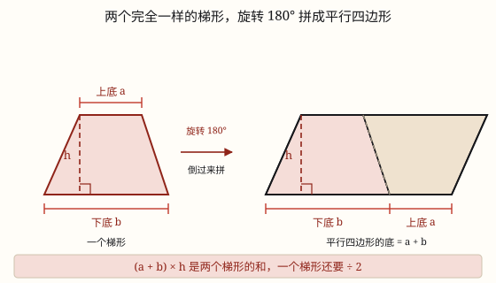

平行四边形、三角形与梯形的面积
沿高剪一刀，把三角形平移到另一边，平行四边形就变成长方形，所以面积 = 底 × 高。
| 所属主题 | 图形的认识与测量 |
|---|---|
| 所属模块 | 图形与几何 |
| 课标学段 | 第三学段（5~6年级） |
| 前置知识 | 面积、面积单位与长方形正方形的面积、平行与垂直、平行四边形和梯形的认识、三角形的认识、内角和与三边关系 |
| 核心素养 | 几何直观空间观念推理意识 |
教材定位
人民教育出版社《2024年版》
对应五上第 6 单元「多边形的面积」：平行四边形的面积。；对应五上第 6 单元「多边形的面积」：三角形的面积。；对应五上第 6 单元「多边形的面积」：梯形的面积。
课标要求
| 图形与几何·图形的认识与测量 | 知道面积单位千米²、公顷；探索并掌握平行四边形、三角形和梯形的面积计算公式；会估计不规则图形的面积（例33）。 印刷第 32 页 行为动词：掌握 |
|---|---|
| 图形与几何·图形的认识与测量 | 在图形认识与测量的过程中，进一步形成量感、空间观念和几何直观。 印刷第 33 页 行为动词：感悟 |
说明
把平行四边形放在方格纸上，先数格子：整格的直接数，不满格的拼一拼。数着数着你会发现一件有意思的事——左边凸出去的那一块，正好能补到右边凹进去的地方，拼起来就是一个长方形。
这个办法叫割补法：沿着高剪一刀，把剪下的直角三角形平移到另一边，平行四边形就变成长方形了。剪和移都只是「搬家」，面积一点没多也没少。
再看对应关系：长方形的长，就是平行四边形原来的底 a；长方形的宽，就是平行四边形原来的高 h。长方形面积 = 长 × 宽，所以平行四边形的面积 = 底 × 高，写作 S = ah。
为什么一定要沿高剪？ 因为长方形的四个角都是直角。高和底是垂直的，沿高剪下来的边平移过去，才能和底边拼成直角；随便斜着剪一刀，接缝处就不是直角，拼出来是个歪的图形，没法用「长 × 宽」。
底和高还必须对应：高是这条底上的高，两者互相垂直。同一个平行四边形，以不同的边为底，就有不同的高，但底乘高的积总是一样的——因为面积本来就没变。
（三角形的面积）
拿两张完全一样的三角形纸片，把其中一张旋转 180°，两张沿着一条相等的边拼在一起——正好拼成一个平行四边形，既没有重叠，也没有空隙。这就是三角形面积公式的来历。
拼成的平行四边形，底就是三角形的底 a，高就是三角形的高 h，它的面积是 a × h。而这个平行四边形是用两个完全一样的三角形拼成的，一个三角形只占它的一半。
所以三角形的面积 = 底 × 高 ÷ 2，写作 S = ah ÷ 2。这个「÷ 2」不是谁规定的，是「两个拼一个」算出来的：先算出两个三角形合起来的面积，再平均分成两份。
任意一个三角形都有三条底，每条底都对应一条高。用哪一组底和高算都行，结果一定相同——因为同一个三角形，面积只有一个。底和高必须互相垂直且互相对应，这是算对的前提。
锐角三角形、直角三角形、钝角三角形都适用这个公式。钝角三角形有两条高落在图形外面，量的时候要把底边延长，再从对面的顶点向延长线作垂线。
（梯形的面积）
还是那个老办法：剪两个完全一样的梯形，把其中一个旋转 180° 倒过来，沿着一条腰和另一个拼在一起，正好拼成一个平行四边形。
看拼成的平行四边形，它的底是由两段接起来的：一段是原来梯形的下底 b，另一段是倒过来那个梯形的上底 a，合起来就是 a + b；它的高还是梯形原来的高 h。所以平行四边形的面积是 (a + b) × h。
这个平行四边形是用两个完全一样的梯形拼成的，一个梯形只占它的一半。于是梯形的面积 = (上底 + 下底) × 高 ÷ 2，写作 S = (a + b)h ÷ 2。
公式里的括号很关键：要先算上底加下底，再乘高，最后除以 2。少了括号，a + bh ÷ 2 就变成「上底加上下底乘高的一半」，意思全变了。
还有一条路也能得到同样的结果：把梯形沿一条对角线剪开，分成两个三角形。一个底是上底 a、高是 h，面积 ah ÷ 2；另一个底是下底 b、高也是 h，面积 bh ÷ 2。两块加起来就是 ah ÷ 2 + bh ÷ 2 = (a + b)h ÷ 2，和拼组法算出来的一模一样。
使用场景
校园花坛：平行四边形花坛铺草皮，先量出底和高算面积，再乘每平方米的价钱。
做班旗、剪彩布：班旗是平行四边形，一面要用多少布，算的就是这个面积。
铺地砖、装扣板：平行四边形地砖、装饰板，买多少块得先算出一块的面积。
农田估产：平行四边形的地块，知道面积才能按每平方米的产量估总产。
比较两块地：形状不一样的两块地，谁大谁小，算面积比一比最公道。
（三角形的面积）
做班旗、剪三角彩旗：一面三角形小旗要用多少布，算的就是三角形面积。
屋顶与桁架：三角形屋面铺瓦、做钢架，先按底乘高除以 2 算出面积，再算材料。
校园花坛：三角形花坛铺草皮、种花，按面积算用量。
交通警示牌：三角形标志牌贴反光膜，一张膜要用多少材料。
红领巾、三角尺：身边这些三角形物件，也常常要估一估它们的面积。
（梯形的面积）
做班旗、剪彩布：梯形彩布要做多大一块，先算面积再下料。
水渠与堤坝：水渠的横截面常是梯形，算面积才能估出土方和用料。
校园花坛：梯形花坛铺草皮、种花，按面积算需要多少。
车窗与招牌：梯形玻璃、梯形招牌面，贴膜和做框都要先算面积。
农田估产：梯形地块按面积乘每平方米产量，估一估总收成。
注意点
别把斜边当高。底 6 厘米、斜边 5 厘米的平行四边形，如果高是 4 厘米，面积是 6 × 4 = 24 平方厘米，不是 6 × 5 = 30。高一定是垂直的那条。
底和高要对应。拿一条底去配另一条底上的高，算出来一定不对；题目给哪条底，就找那条底上的高。
面积单位要平方。底和高都按厘米量，面积就是平方厘米；写成「厘米」是把面积当成了长度。
别和周长混。平行四边形没有「(a + b) × 2 算面积」这种说法，那是周长的思路；「铺满、盖住、种满」才用面积。
剪拼时不要重叠也不要留缝。剪下的那块要正好补上另一边，多一块少一块，拼出来的就不是长方形了。
（三角形的面积）
÷ 2 千万不能漏。底 6 厘米、高 4 厘米的三角形，面积是 6 × 4 ÷ 2 = 12 平方厘米；写成 24 就是把两个三角形当成一个了。
高不是斜边。三角形没有「斜边乘底」这种算法，高必须是从顶点到底边的垂直距离。
底和高要对应。给的是哪条底，就找那条底上的高；三条底对应三条高，配错了答案就错。
已知面积求底或高，要先乘 2。面积 12 平方厘米、底 6 厘米，高是 12 × 2 ÷ 6 = 4 厘米，不是 12 ÷ 6 = 2 厘米。
钝角三角形的高可能在图形外面。量高时要把底边延长，别硬在图形里面找。
单位要平方。底和高用厘米，面积就是平方厘米。
（梯形的面积）
括号不能漏。上底 4、下底 6、高 3，正确是 (4 + 6) × 3 ÷ 2 = 15；写成 4 + 6 × 3 ÷ 2 得 13，少了 2。
÷ 2 不能漏。(4 + 6) × 3 = 30 是两个梯形拼成的平行四边形，求一个梯形必须再除以 2。
高不是腰。梯形有两条腰，都是斜的；高是两条平行底之间的垂直距离。拿腰去乘，算出来的不是面积。
上底、下底看平行，不看长短。习惯上短的在上面叫上底，但位置可以倒过来放；只要是那两条互相平行的边，就是上底和下底。
单位要平方。上底、下底、高都用米，面积就是平方米。

图 1：两个完全一样的三角形能严丝合缝拼成一个平行四边形，所以一个三角形只占它的一半

图 1：两个完全一样的梯形拼成平行四边形，它的底正好是上底加下底
为什么是这样

图 1：沿高剪开、平移过去，面积一点没多也没少，平行四边形就这样变成长方形
算理推导
先回到已经会算的图形：长方形的面积 = 长 × 宽，这是三年级就掌握的本事。平行四边形斜着边，方格对不齐，直接数很麻烦——那就想办法把它变成会算的长方形。
沿高剪一刀：从顶点向底作高，沿着这条高剪下一个直角三角形。这条高和底垂直，是「正着」剪下去的，剪口是一条竖直线。
把剪下的三角形平移到另一边。它的斜边刚好和原来另一侧的斜边重合，凸出的补进凹处，一点不重叠、一点不留缝，拼成一个长方形（看图 1）。
找对应：长方形的长就是平行四边形的底 a，长方形的宽就是平行四边形的高 h。剪拼只是搬家，面积没变，所以平行四边形面积 = 长 × 宽 = a × h。
为什么必须沿高剪？长方形的角都是直角。高与底垂直，剪下的边平移后才能和底拼成直角；斜着剪，接缝是斜的，拼出来还是斜的四边形，就用不上「长 × 宽」这条老经验了。
（三角形的面积）
先复习上一课：平行四边形的面积 S = ah，它是把平行四边形剪拼成长方形得来的。现在遇到三角形，斜边更多，数方格更麻烦，还是用老办法——把它变成会算的图形。
剪两个完全一样的三角形。把其中一个旋转 180°（绕一条边的中点转半圈），沿着一条相等的边和另一个拼在一起，正好拼成一个平行四边形，看图 1 右边：两块颜色不同的三角形严丝合缝。
观察对应关系：平行四边形的底就是三角形的底 a，平行四边形的高就是三角形的高 h。所以这个平行四边形的面积是 a × h。
关键的一步：这个平行四边形由两个完全一样的三角形组成，一个三角形正好占一半。所以三角形面积 = ah ÷ 2。
换个说法也一样：要把三角形补成平行四边形，必须再复制一个一模一样的；补出来的面积是原来的 2 倍，那么原来的就是补成后的一半。÷ 2 是「两个拼一个」的必然结果，不是额外加的规定。
（梯形的面积）
先回忆前两课：平行四边形剪拼成长方形，得 S = ah；三角形用两个拼成平行四边形，得 S = ah ÷ 2。办法是同一个——把不会算的图形，拼成会算的图形。
梯形也照着做：剪两个完全一样的梯形，把其中一个旋转 180°（转半圈）倒过来，沿着一条腰贴上去，两个梯形正好拼成一个平行四边形，看图 1 右边。
看拼成后的底：下边由原来梯形的下底 b 和倒过来那个梯形的上底 a 接成，长度是 a + b；高没变，还是 h。所以平行四边形面积 = (a + b) × h。
这个平行四边形由两个完全一样的梯形组成，一个梯形占一半，所以 S = (a + b)h ÷ 2。÷ 2 还是「两个拼一个」的结果。
换一条路验一验：沿对角线把梯形分成两个三角形，它们的高都是 h，底分别是 a 和 b，面积和是 ah ÷ 2 + bh ÷ 2，把公因数提出来正好是 (a + b)h ÷ 2。两条路走到同一个地方，公式就靠得住了。
动手实验
在方格纸上画一个底 6 格、高 4 格的平行四边形，剪下来。沿高剪一刀，把三角形平移到另一边，量一量拼成的长方形：长 6 格、宽 4 格，一共 24 格。再把平行四边形「压扁」一点——底还是 6 格，高变成 3 格，重新剪拼，长方形变成 18 格。底没变、高变小，面积跟着变小，正好说明面积是由底和高一起决定的。 （三角形的面积） 剪三组完全一样的三角形：锐角、直角、钝角各两个。每组都试着拼一次，你会发现都能拼成平行四边形。量出底和高，先算平行四边形的面积，再除以 2，和用方格纸数出来的三角形面积对一对。再把同一个三角形换一条边当底、量出对应的另一条高，重新算一遍，答案应该完全一样。 （梯形的面积） 剪两个完全一样的梯形（上底 3 厘米、下底 5 厘米、高 4 厘米）。把其中一个旋转 180° 拼起来，量一量平行四边形的底：正好 8 厘米，高 4 厘米，面积 32 平方厘米；一个梯形就是 16 平方厘米。再把梯形沿对角线剪成两个三角形，分别量底和高算面积，加起来也是 16 平方厘米。两种办法对上了，说明公式没错。
按场景的例题
例 1（场景：饮食与配比） 给班级做一面平行四边形班旗
班旗是平行四边形，底边长 1.2 米，这条底上的高是 0.8 米。做一面旗需要多少平方米彩布？
解：直接用 S = ah：1.2 × 0.8 = 0.96（平方米）。想把小数乘法算稳：12 × 8 = 96，两位小数得 0.96。
答：需要 0.96 平方米彩布。
例 2（场景：计量与估算） 一块平行四边形菜地收白菜
菜地的底是 25 米，高是 16 米。每平方米收白菜 3 千克，这块地一共能收多少千克？
解：面积 25 × 16 = 400 平方米；总产量 400 × 3 = 1200 千克。
答：一共能收 1200 千克。
例 3（场景：工程建造） 装修用的平行四边形装饰板
一块平行四边形装饰板，底 4.5 分米，高 2.4 分米。它的面积是多少平方分米？
解：S = ah = 4.5 × 2.4。先算 45 × 24 = 1080，两位小数得 10.8。
答：面积是 10.8 平方分米。
例 4（场景：购物消费） 小区里的平行四边形花坛
花坛的底是 8 米，高是 5.5 米。铺草皮每平方米 12 元，铺满这个花坛要多少元？
解：面积 8 × 5.5 = 44 平方米；总价 44 × 12 = 528 元。
答：要 528 元。
例 5（场景：校园生活） 给班级做三角形小旗
小旗是三角形，底边 1.5 米，这条底上的高是 0.9 米。做一面小旗要多少平方米彩布？
解：S = ah ÷ 2 = 1.5 × 0.9 ÷ 2。先算 15 × 9 = 135，两位小数得 1.35；再除以 2 得 0.675。
答：需要 0.675 平方米彩布。
例 6（场景：农业生产） 三角形屋顶铺瓦
一面三角形屋顶，底宽 6 米，高 2.5 米。铺瓦每平方米 45 元，这面屋顶要多少元？
解：面积 6 × 2.5 ÷ 2 = 15 ÷ 2 = 7.5 平方米；费用 7.5 × 45 = 337.5 元。
答：面积 7.5 平方米，要 337.5 元。
例 7（场景：绿化照明） 校园三角形花坛种花
花坛是三角形，底 4 米，高 3 米。每平方米种 9 株花，一共要种多少株？
解：面积 4 × 3 ÷ 2 = 6 平方米；株数 6 × 9 = 54 株。
答：一共要种 54 株。
例 8（场景：上学日常） 路口看到的三角形警示牌
一块三角形警示牌，底 0.8 米，高 0.7 米。给它正面贴反光膜，需要多少平方米的膜？
解：0.8 × 0.7 = 0.56，再除以 2 得 0.28。
答：需要 0.28 平方米反光膜。
例 9（场景：物流运输） 做一面梯形彩布班旗
班旗是梯形，上底 0.8 米，下底 1.4 米，高 0.6 米。需要多少平方米彩布？
解：S = (a + b)h ÷ 2 = (0.8 + 1.4) × 0.6 ÷ 2。先算 0.8 + 1.4 = 2.2，再算 2.2 × 0.6 = 1.32，最后 1.32 ÷ 2 = 0.66。
答：需要 0.66 平方米彩布。
例 10（场景：行程出行） 水渠的横截面
一条水渠的横截面是梯形，上底 1.2 米，下底 2.4 米，深（高）0.9 米。横截面积是多少平方米？
解：(1.2 + 2.4) × 0.9 ÷ 2 = 3.6 × 0.9 ÷ 2 = 3.24 ÷ 2 = 1.62。
答：横截面积是 1.62 平方米。
例 11（场景：家庭与年龄） 校园里的梯形花坛
花坛上底 5 米，下底 9 米，高 4 米。每平方米种 8 株花，一共要种多少株？
解：面积 (5 + 9) × 4 ÷ 2 = 14 × 4 ÷ 2 = 28 平方米；株数 28 × 8 = 224 株。
答：一共要种 224 株。
例 12（场景：金融理财） 一块梯形菜地
菜地上底 12 米，下底 20 米，高 15 米。这块地的面积是多少平方米？
解：(12 + 20) × 15 ÷ 2 = 32 × 15 ÷ 2 = 480 ÷ 2 = 240。也可以先算 15 ÷ 2 = 7.5，再 32 × 7.5 = 240。
答：面积是 240 平方米。
常用推论
平行四边形的面积 S = ah；反过来，底 a = S ÷ h，高 h = S ÷ a。
等底等高的平行四边形，面积一定相等，形状可以完全不同——因为它们都能剪拼成同一个长方形。
底不变时，高扩大到原来的 n 倍，面积也扩大到 n 倍；高不变时，底扩大到 n 倍，面积同样扩大到 n 倍。
平行四边形能剪拼成长方形，所以它的面积和等底等高的长方形面积相等，只是形状不同。
三角形的面积 S = ah ÷ 2；反过来，底 a = 2S ÷ h，高 h = 2S ÷ a。
等底等高的三角形面积一定相等，形状可以完全不同——因为它们的面积都是同一个平行四边形的一半。
三角形面积是等底等高平行四边形面积的一半；反过来，平行四边形面积是等底等高三角形面积的 2 倍。
高不变时，底扩大到原来的 n 倍，面积也扩大到 n 倍；底不变时，高扩大到 n 倍，面积同样扩大到 n 倍。
梯形的面积 S = (a + b)h ÷ 2；反过来，高 h = 2S ÷ (a + b)。
已知面积、高和下底，求上底：a = 2S ÷ h - b；求下底同理。
梯形可以沿对角线分成两个三角形，面积是 ah ÷ 2 + bh ÷ 2，两条路算出同一个结果。
上底、下底、高分别相等的两个梯形，面积一定相等，形状可以不同。
易错点
错底 6 厘米、斜边 5 厘米，算成 6 × 5 = 30 平方厘米。
为什么错把斜边当成了高。斜边是斜着量的，不是两条平行底之间的垂直距离，乘出来的不是面积。
正确找到这条底上的高（如 4 厘米），6 × 4 = 24 平方厘米。
错底 6 厘米配了另一条底上的高 3 厘米，算成 18 平方厘米。
为什么错底和高没有对应。高必须垂直于所用的那条底，配错了等于用别人的高算自己的面积。
正确先确认高是哪条底上的：题目说「底 6 厘米上的高是 4 厘米」，就用 6 和 4。
错算出 24，答案写成「24 厘米」。
为什么错底和高都是长度，相乘得到的是面积，单位要变成平方。
正确写成 24 平方厘米（\textcm^2）。
错觉得平行四边形「斜着放，边更长」，面积一定比同底同高的长方形大。
为什么错斜边变长只是形状被推歪了，两条底之间的垂直距离（高）没变，能铺的小方格个数就没变。
正确面积只看底和高，S = ah，与斜边长短无关。
错底 6 厘米、高 4 厘米，算成 6 × 4 = 24 平方厘米。
为什么错漏了 ÷ 2。6 × 4 算的是「两个完全一样的三角形拼成的平行四边形」，不是这一个三角形。
正确6 × 4 ÷ 2 = 12 平方厘米。
错底 8 厘米、一条边 5 厘米，算成 8 × 5 ÷ 2 = 20 平方厘米。
为什么错5 厘米是另一条边，不是这条底上的高。高必须垂直于所选的底。
正确找出这条底上的高（如 3 厘米），8 × 3 ÷ 2 = 12 平方厘米。
错已知面积 12 平方厘米、底 6 厘米，求高时算成 12 ÷ 6 = 2 厘米。
为什么错忘了公式里的 ÷ 2。反求高时，要先把面积乘 2，还原成平行四边形的面积。
正确h = 2S ÷ a = 12 × 2 ÷ 6 = 4 厘米。
错钝角三角形在图形里面找不到高，就说「这个三角形没有高」。
为什么错钝角三角形有两条高落在图形外面，要从顶点向底边的延长线作垂线。
正确把底边延长，从对面的顶点向延长线作垂线，量出这段垂直距离就是高。
错上底 4 厘米、下底 6 厘米、高 3 厘米，算成 4 + 6 × 3 ÷ 2 = 13。
为什么错少了括号，变成了「上底加上下底乘高的一半」。上底和下底必须先加起来，才是平行四边形的底。
正确(4 + 6) × 3 ÷ 2 = 10 × 3 ÷ 2 = 15 平方厘米。
错算出 (4 + 6) × 3 = 30 就写答案。
为什么错漏了 ÷ 2。30 是两个同样梯形拼成的平行四边形的面积，一个梯形只占一半。
正确(4 + 6) × 3 ÷ 2 = 15 平方厘米。
错上底 4 厘米、下底 6 厘米、腰 5 厘米，算成 (4 + 6) × 5 ÷ 2 = 25。
为什么错把腰当成高了。腰是斜的，不是两底之间的垂直距离，乘出来的不是面积。
正确量出两底之间的垂直距离（如高 3 厘米），(4 + 6) × 3 ÷ 2 = 15 平方厘米。
错把梯形不平行的那条腰当成底，套公式算。
为什么错公式里的 a、b 必须是互相平行的上底和下底，腰不参与面积计算。
正确先找出两条平行的边，分别作上底、下底，再量它们之间的高。
直观理解
平行四边形像一摞被推歪的作业本：本子的厚度没变、每本的长也没变，只是整体错开了一点。你把它推正，还是那一摞，占地一点没多。所以只要「推正」变成长方形，用长乘宽一算，就是它的面积。 （三角形的面积） 一块三角形三明治，再拿一块一模一样的、转个身贴上去，正好装满一个平行四边形「整盒」。整盒的面积用底乘高好算，一块就是整盒的一半——所以算三角形，先算整盒，再两个人平分。 （梯形的面积） 梯形像一段上窄下宽的堤坝。两个一模一样的堤坝，一个倒过来扣上去，正好拼成一条上下等宽的平行四边形「长条」。长条的长是上底加下底，所以一段堤坝就是整条的一半。
平行四边形，割补变长方；底乘高得面积，斜边不能当高量。 （三角形的面积） 两个一样三角形，旋转一拼成平行；整块面积底乘高，一块要拿一半分。 （梯形的面积） 两个梯形拼一起，上底下底接成底；底乘高来再一半，括号千万别忘记。